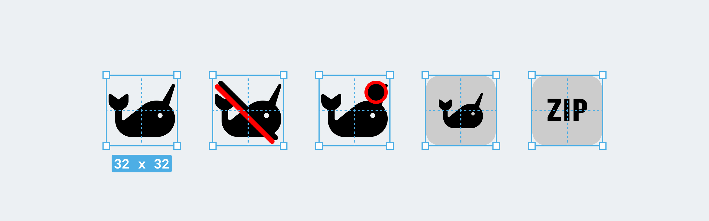
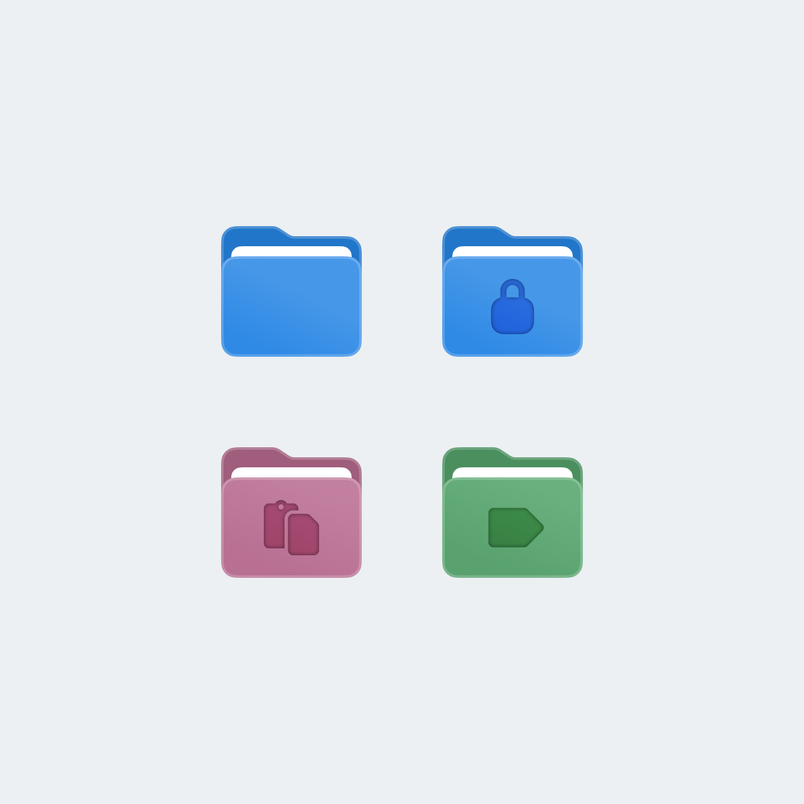

Design system for a legacy LMS
I focused on turning fragmented UI decisions into a scalable design system used across development teams. I led the evolution of the system through simplification, standardization, and close collaboration with engineering, reducing inconsistency, improving adoption, and creating foundations that could scale with the product.

Context
itslearning is a large European Learning Management System (LMS) with a 25 year long history that serves millions of teachers and students across K-12, higher and vocational education in 10+ markets.
When I joined itslearning in late 2022, the design system already existed — but almost nobody used it. Only the team maintaining the system relied on its components, while other product teams continued building custom solutions for similar problems.
The UX team faced the same issue. The UI kit had grown without clear rules or ownership: duplicated components, overlapping styles, and inconsistent decisions across the product. Designers regularly introduced new patterns, and engineering teams implemented them as-is, which made the interface increasingly fragmented over time.
Iconography
The icon system had evolved organically over many years, resulting in inconsistent styles, proportions, and alignment behavior across the product.
We rebuilt the system around a unified structure using Font Awesome as a foundation. System icons were standardized for consistency and easier maintenance, while brand icons were redesigned into a single coherent style.
To make the system scalable, I also introduced reusable templates that allow any designer, regardless of illustration skills, to create new Brand icons consistent with the existing set:

Layout system
The product contained hundreds of pages built independently over more than 20 years. Despite their variety, most of them followed a small number of recurring patterns.
I analysed the existing interface and introduced a unified page template system. It defines consistent navigation, content area, panels, spacing, and responsive behavior. Content layouts could adapt between narrow, wide, and full-width containers depending on the use case.
These templates significantly improved consistency and helped teams build and redesign interfaces much faster.
Sanoma Learning Design System reused our approach to layouts and made it available to all product teams across Sanoma Learning.
Colors
The color palette had grown over time without clear structure or rules. Similar colors were used inconsistently, and introducing branding changes was risky because accent and brand colors appeared almost everywhere in the interface.
- Reorganized the palette without changing the UI.
- Reduced the number of tokens from 83 to 56.
- Defined clear roles for each color.
- Mapped 300+ custom colors and replaced them with tokens.


As a result, no new colors have been introduced in the last 2 years. The usage rules are clear and strainghtforward, with hesitatnce between options being eliminated.


Typography
I consolidated the system into a smaller, structured set of reusable text styles and mapped legacy styles to the updated typography scale. Over time, this significantly improved visual consistency across new features and redesigned areas of the product.
Introduced a font selection for personalization and accessibility.


Attention to detail
Beyond large system changes, I consistently focused on small interface improvements that made the product feel more polished, cohesive, and intentional. From interaction states to spacing, hierarchy, and visual consistency, these details helped strengthen the overall quality and perception of the system.




Aleksandra combines a rare level of professionalism with a deep commitment to accessibility and product quality. She always ensures her team is moving in a clear, unified direction, and her approach to organizing work is truly impressive. Head of UX at Sanoma Learning
Accessibility
TBA
Collaboration & Adoption
A big part of my role is enabling collaboration between teams that previously worked in isolation.
I established weekly syncs with the Design System engineering team to review new components, edge cases, and implementation challenges early in the process. Together with the Product Owner, we also introduced regular pre-planning sessions to align upcoming work and coordinate requests from other product teams.
In practice, this meant building communication and shared ownership around the system — making sure design and engineering decisions were discussed collaboratively instead of being solved independently inside separate teams.
Impact
Product
- Faster development due to predictable patterns
- Increased the design system adoption
- Improved product accessibility
- Consistent cross-platform experience
UX Team
- Scaled the team from 3 → 7 specialists
- Designers grew significantly in maturity and confidence
- Stronger collaboration and mentorship culture
System Foundations
- Introduced layout & page templates
- Replaced 300+ colors with 56 structured tokens
- Unified disparate icon sets into one predictable icon system
- Reorganized the design system for clarity, scalability
Organization
- UX–engineering collaboration strengthened, especially around accessibility
- Accessibility tools adopted across Sanoma Learning (40+ designers)
- Structured how UX and UX Research work together